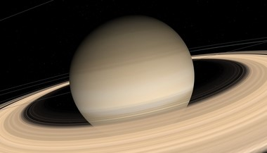
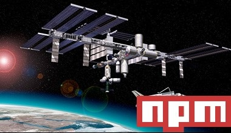
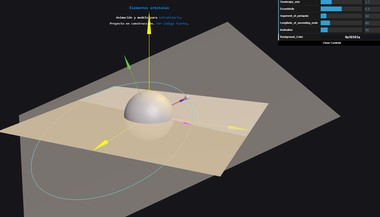

Projects
- 
-

ARTASTRA
npm library for easily generating artistic representation of planets and other celestial objects. It works over three.js.
Read more -

ORBITAL ELEMENTS
Keplerian elements define an elliptical orbit. This model allows to visualize this parameters and change them in real time to make the model change.
Launch